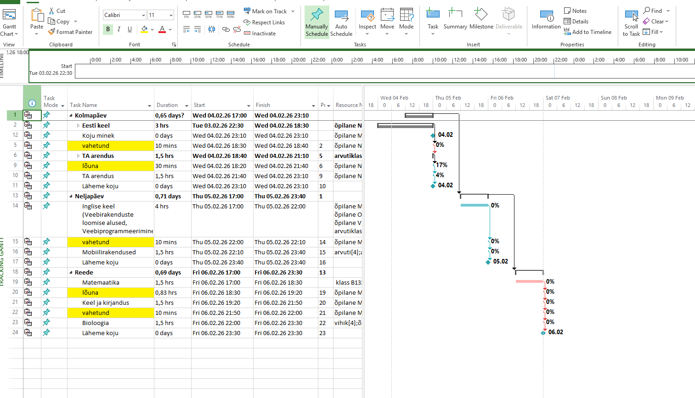
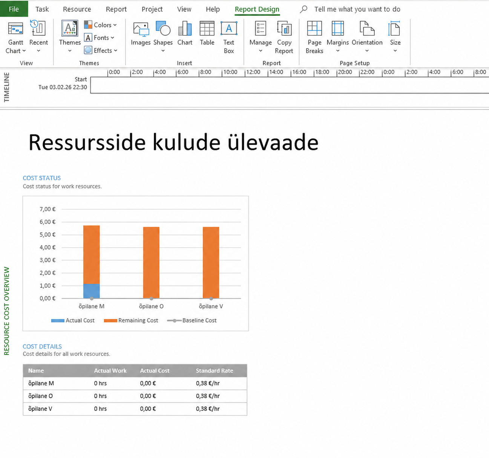
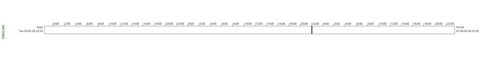

Microsoft Projectis kasutatakse diagramme projekti visualiseerimiseks. Kõige tähtsam on Gantt diagramm.
Samm 1 — Gantti diagramm
Ava vaade Gantt Chart. Siin näed kõiki ülesandeid koos kestuste, algus- ja lõpuaegade ning ressurssidega. Ülesanded on grupeeritud päevade kaupa (Kolmapäev, Neljapäev, Reede). Kollasega on märgitud vahetunnid ja lõunapausid.

Samm 2 — Gantti diagramm täisvaates
Gantti täisvaates on näha kogu projekti ajakava ajajoonel. Sinised ribad tähistavad ülesandeid, teemandid (◆) vahesamme. Ülesannete kõrval kuvatakse määratud ressursid ja täitmise protsent. Projekt kestab 04.02.26 – 06.02.26.

Samm 3 — Aruannete menüü
Mine menüüsse Report. Sealt leiad erinevaid aruandetüüpe: Dashboards, Resources, Costs, In Progress, Getting Started, Custom ja Visual Reports. Aruanded annavad kiire ülevaate projekti seisust, kuludest ja ressurssidest.

Samm 4 — Ressursside kulude aruanne
Vali Report → Costs → Resource Cost Overview. Avaneb aruanne, kus on kuvatud iga ressursi tegelikud kulud (Actual Cost), järelejäänud kulud (Remaining Cost) ja baasjoon (Baseline Cost). Tabeli all on näha standardmäär — antud projektis 0,38 €/hr ressursi kohta.

Samm 5 — Projekti ajajoon (Timeline)
Ajajoon (Timeline) kuvatakse Gantti diagrammi ülaosas. See näitab kogu projekti kestust ühel ribal — antud juhul algusega 03.02.26 kell 22:30 ja lõpuga 06.02.26 kell 23:30. Ajajoone saab eksportida või lisada esitlusse.
